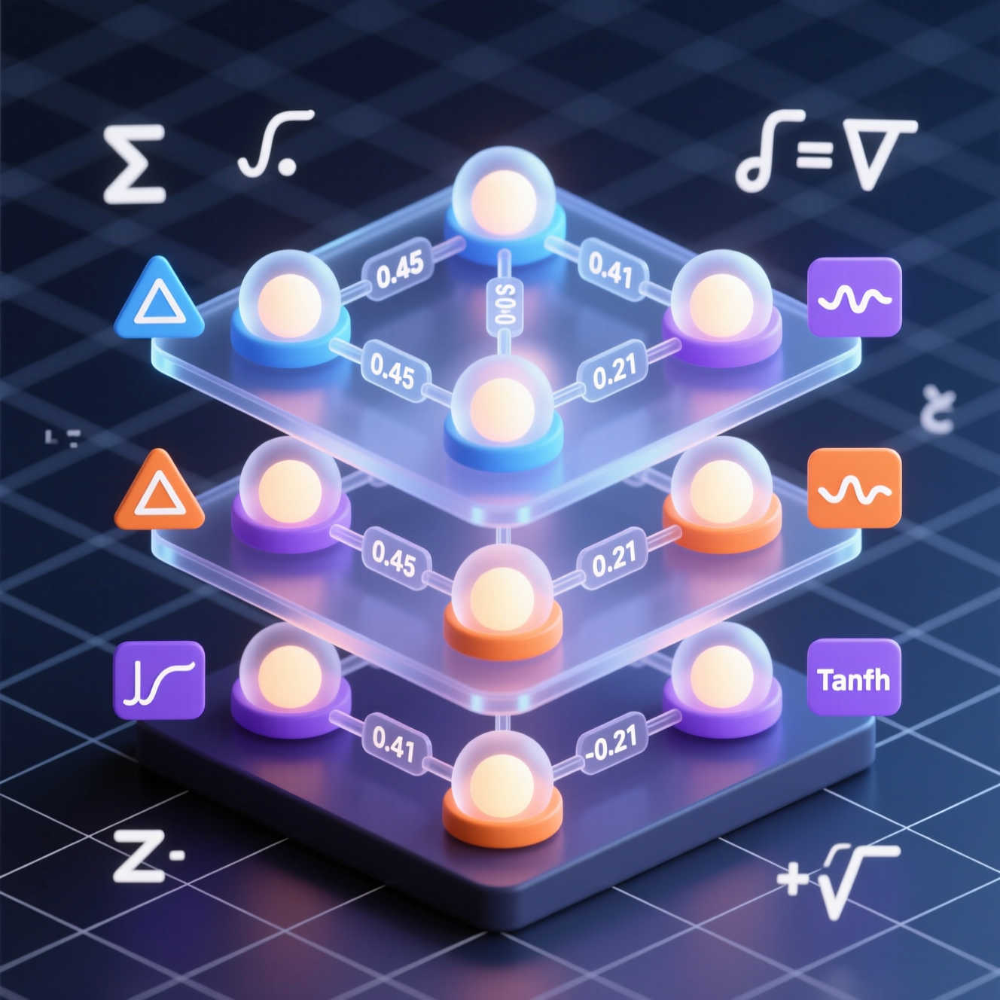
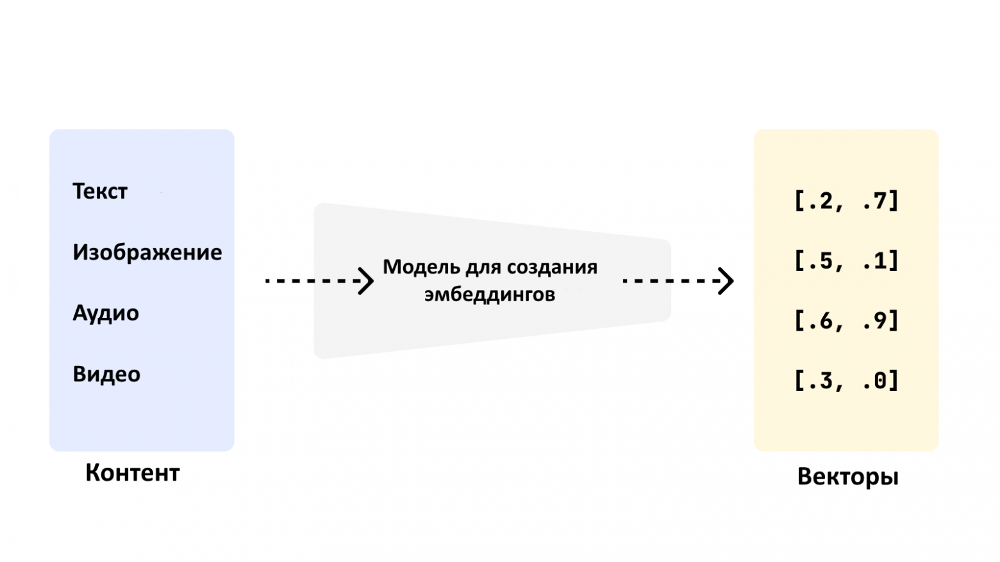
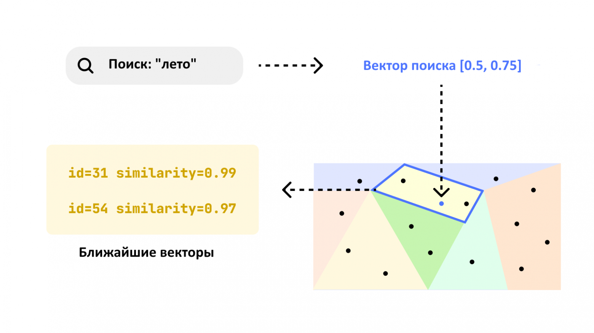
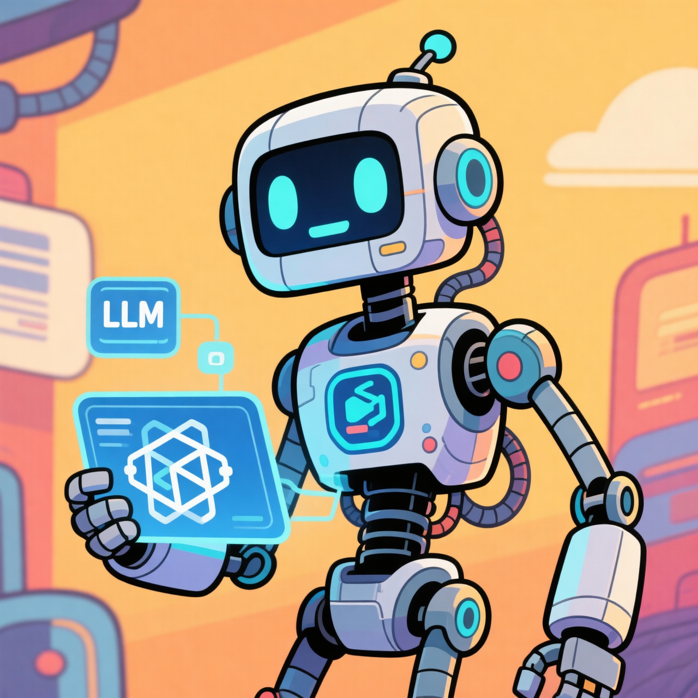
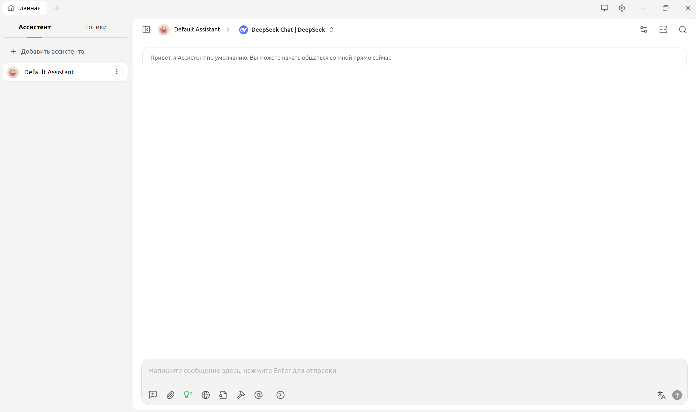
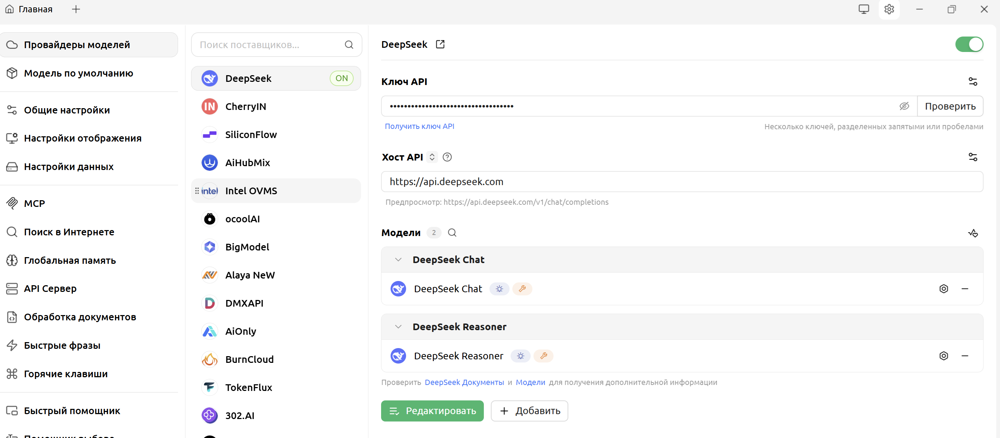

Базовые термины, определения
и принципы работы
Large Language Model — искусственная нейронная сеть огромного масштаба, обученная на колоссальных массивах текстовых данных. Её цель — понимать, генерировать и предсказывать текстовые последовательности.

Прогнозирующая модель с миллиардами параметров, обученная предсказывать следующий токен в последовательности.
Нейроны — узлы сети, обрабатывающие информацию
Веса связей — числа, определяющие силу связи между нейронами
Функция активации — нелинейная функция, добавляющая сложность модели
Вся история диалога, которую модель «помнит» при генерации ответа — её рабочая память.
Размер: от 8K до 128K+ токенов
Переполнение: модель «забывает» информацию из середины диалога
Решение: суммаризация ключевых моментов
Базовые единицы текста для модели. Не всегда целые слова — могут быть слогами, частями слов, знаками препинания.
Скрытая инструкция, задающая модели поведение с самого начала диалога.
Контролирует случайность и креативность ответов
Выбирает из наименьшего набора токенов, чья суммарная вероятность ≥ порога p. Отсекает маловероятные варианты.
Ограничивает выбор следующего токена только k наиболее вероятными кандидатами.
Базовая LLM — «изолированный мозг». Она не знает вашу специфику, документы и актуальные данные.
Дополнительное обучение модели на вашем наборе данных.
Retrieval-Augmented Generation — дополнение промпта релевантными фрагментами из базы знаний.

Эмбеддинг — многомерный числовой вектор (768–1536 измерений), представляющий смысл текста
Векторная БД — хранит тексты как векторы и быстро ищет близкие по смыслу
Близость — косинусное сходство или скалярное произведение. Ближе к 1 = ближе по смыслу

MCP — открытый протокол, позволяющий LLM безопасно взаимодействовать с внешними инструментами, API и данными.
Система на основе LLM, которая самостоятельно планирует и выполняет последовательность действий для достижения сложной цели.

Платформа для развёртывания, тестирования и мониторинга LLM-приложений. «Панель управления» для ваших AI-проектов.

По лицензии
Открытые (Llama 3, Mistral, Gemma) и проприетарные (GPT-4, Claude)
По размеру
От 7B для мобильных устройств до 400B+ для исследований
По специализации
Общие (Llama), код (CodeLlama), мультимодальные (LLaVA)

LLM — мощный, но не всесильный инструмент. Знайте сильные стороны и ограничения.
Контекст — это память модели. Управляйте им осознанно.
Промпт — это инструкция. Чёткий промпт = качественный ответ.
Для работы со своими данными: RAG как быстрый старт, Fine-Tuning для глубокой интеграции.
MCP и Агенты открывают путь к интеллектуальным автономным системам.
Тестируйте, сравнивайте, выбирайте модель под задачу.